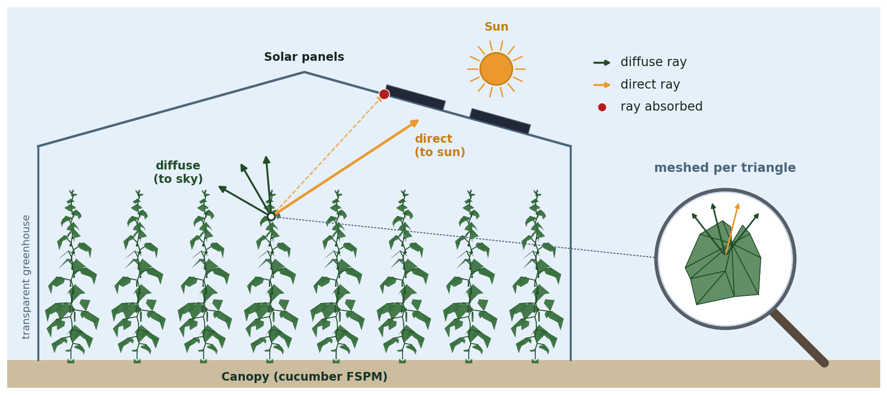
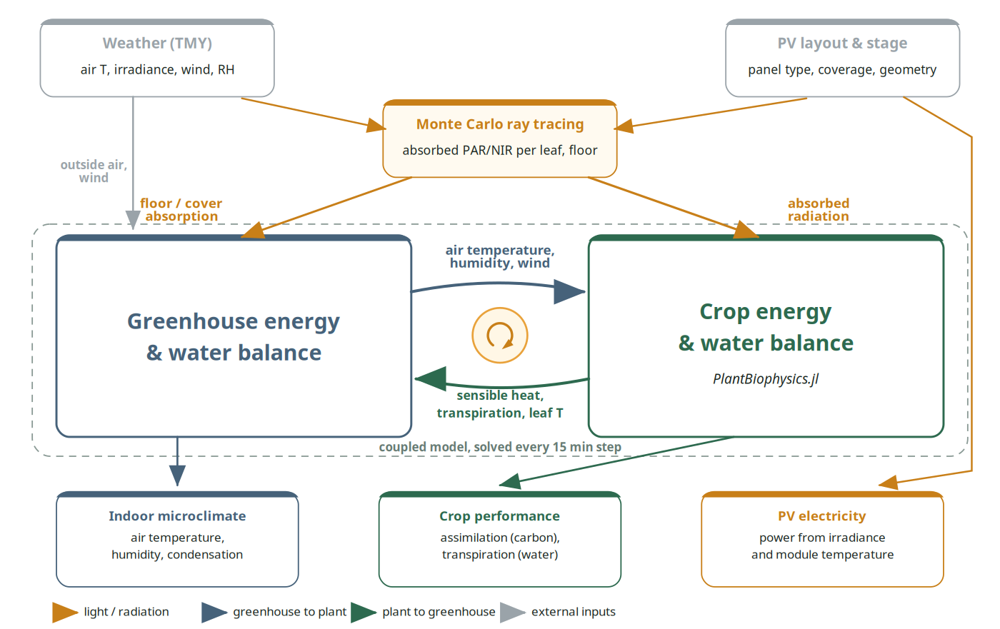
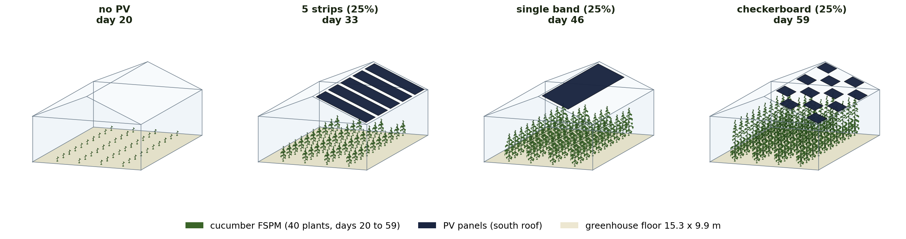
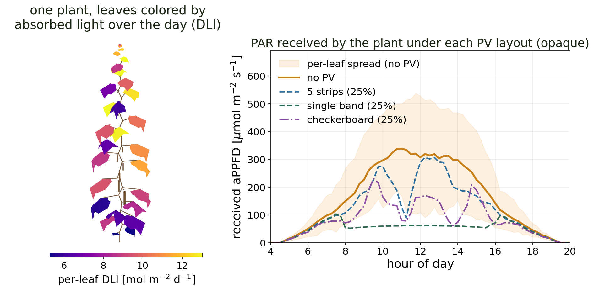
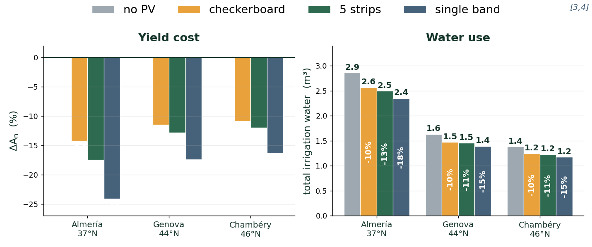
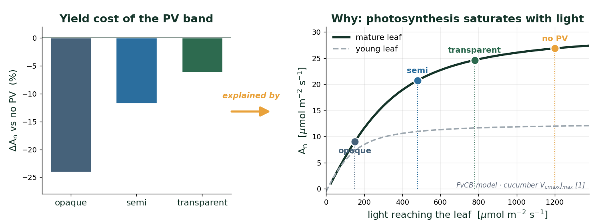

Why The central question
Are PV generation and greenhouse production compatible without supplemental lighting?
Crop growth in a greenhouse is tied to the PAR reaching the canopy, well captured by a simple 1D Beer-Lambert model in a conventional greenhouse. Roof-mounted PV panels generate electricity but shade the crop, and that shading is strongly heterogeneous: measurements report a 4.5× difference between under-panel and far rows at 50% coverage. A 1D average can no longer capture the per-leaf response, so we built a per-leaf, layout-aware model.
Why a 1D model is not enough
Model How it works
The light reaching every single leaf is resolved by two backward Monte Carlo passes: one samples the sky hemisphere (diffuse), the other casts rays toward the sun (direct), including multiple scattering between leaves. It is validated against ArchimedLight within 2%.

tap to zoomThese per-leaf fluxes drive a coupled balance, exchanged every 15 min between a greenhouse energy & water ODE and PlantBiophysics (per-leaf energy balance, photosynthesis, stomatal conductance).

Setup Four PV layouts
The same cucumber canopy is run under four roof layouts at equal 25% coverage: no PV, five strips, a single continuous band and a checkerboard, shown here at progressive growth stages.

tap to zoomResult 1 Light varies within one plant

tap to zoomResult 2 The layout sets the cost

tap to zoomThe numbers & robustness
- Yield cost (ΔAn, opaque): checkerboard −11/−14%, five strips −12/−17%, band −16/−24% (Genova / Almería).
- Water is a co-benefit: less light → less transpiration → 10–18% less irrigation, the most in the sunny south (Almería).
- Robust to planting density: doubling the canopy (40→80 plants) changes the penalties by only 1–2 percentage points.
Result 3 Introducing semi-transparent PV panels

tap to zoomWhy transparency works & the energy trade-off
A sunlit leaf cut from 1200 to 480 µmol (semi-transparent) keeps 77% of its photosynthesis despite losing 60% of the light: the saturation buffer. So the yield cost is highly sub-linear.
But transparency is a trade-off with electricity:
- Opaque (η~19%): ~43 kWh/day, −24% yield (band).
- Semi (η~10%): ~23 kWh/day, −12% yield.
- Transparent (η~6%): ~14 kWh/day, only −6% yield.
Even transparent panels (14 kWh/day) cover the electrical needs of a passively-ventilated greenhouse (~2–5 kWh/day) several times over.
Perspective Where this matters
- For high-irradiation regions where regulations may cap crop water use (e.g. Imperia, IT).
- A dynamic alternative to static roof white-washing.
- (Semi-)transparent PV cuts irrigation and powers the greenhouse while barely reducing yield.
- Robust to planting density.